Summary
- Description
- Getting ready
- Loading example data
- Simulating a random community
- Simulating nested communities
- Niche conservatism in communities
- Predictions for communities
- Save and import
Description
This vignette shows how to simulate virtual communities using functions in the nicheR package. For our purposes, we will consider a community a set of species niches (ellipses) that are distributed in a given environmental space. The simulation of virtual communities is useful to generate hypothetical scenarios of community assembly and explore patterns derived from the way species are distributed in envrionmental and geographical space.
The main functions that automate community simulations in
nicheR are:
-
random_ellipses(): generates a set of random ellipses in the environmental space provided. A scenario in which niche conservatism is not present. -
nested_ellipses(): generates a set of nested ellipses taking the reference niche as the biggest possible ellipse. A scenario in which all species niches are contained within the reference niche, and each is contained within the previous one. -
conserved_ellipses(): generates a set of ellipses in the environmental space provided aiming for a set of ellipses that are similar to the reference niche. A scenario of niche conservatism.
Getting ready
If nicheR has not been installed yet, please do so. See
the Main guide for installation
instructions.
Use the following lines of code to load nicheR and other
packages needed for this vignette, and to set a working directory (if
necessary).
Note: We will display functions from other packages as
package::function().
# Load packages
library(nicheR)
#library(terra)
# Current directory
getwd()
# Define new directory
#setwd("YOUR/DIRECTORY") # modify if setting a new directory
# Saving original plotting parameters
original_par <- par(no.readonly = TRUE)Loading example data
The lines of code below help us load the data to run our example
comunity simulations. The data are included in the nicheR
package and consist of an nicheR_ellipsoid object with a
reference niche defined by two environmental variables (bio1 and bio12)
and these envrionmental variables for North America to represent the
background for our simulations.
# Reference niche
data("ref_ellipse", package = "nicheR")
# Background data
data("back_data", package = "nicheR")
# Raster layers for predictions
ma_bios <- terra::rast(system.file("extdata", "ma_bios.tif",
package = "nicheR"))Let’s take a look at the reference niche and the background data to get familiar with them before we start simulating communities. The raster layers will be used later for predictions, so we will just check them here to make sure they are loaded correctly.
# Check reference niche
print(ref_ellipse)
#> nicheR Ellipsoid Object
#> -----------------------
#> Dimensions: 2D
#> Chi-square cutoff: 9.21
#> Centroid (mu): 23.5, 1750
#>
#> Covariance matrix:
#> bio_1 bio_12
#> bio_1 1.361 -100
#> bio_12 -100.000 62500
#>
#> Ellipsoid semi-axis lengths:
#> 758.715, 3.326
#>
#> Ellipsoid axis endpoints:
#> Axis 1:
#> bio_1 bio_12
#> vertex_a 24.714 991.286
#> vertex_b 22.286 2508.714
#>
#> Axis 2:
#> bio_1 bio_12
#> vertex_a 26.826 1750.005
#> vertex_b 20.174 1749.995
#>
#> Ellipsoid volume: 7927.882
# Check background data
head(back_data)
#> x y bio_1 bio_5 bio_6 bio_7 bio_12 bio_13 bio_14
#> 1 -99.91667 29.91667 18.16097 33.23550 0.86900 32.36650 680 84 26
#> 2 -99.75000 29.91667 18.06556 33.32575 0.65550 32.67025 703 87 28
#> 3 -99.58333 29.91667 17.95946 33.33925 0.44600 32.89325 725 92 31
#> 4 -99.41667 29.91667 18.01018 33.34200 0.62200 32.72000 734 95 33
#> 5 -99.25000 29.91667 18.14458 33.40400 0.99125 32.41275 748 97 34
#> 6 -99.08333 29.91667 18.36623 33.76550 1.02025 32.74525 771 101 36
#> bio_15
#> 1 39.75968
#> 2 38.44158
#> 3 37.43598
#> 4 36.24147
#> 5 34.95365
#> 6 33.73626
# Check the raster layers
ma_bios
#> class : SpatRaster
#> size : 150, 240, 8 (nrow, ncol, nlyr)
#> resolution : 0.1666667, 0.1666667 (x, y)
#> extent : -100, -60, 5, 30 (xmin, xmax, ymin, ymax)
#> coord. ref. : lon/lat WGS 84 (EPSG:4326)
#> source : ma_bios.tif
#> names : bio_1, bio_5, bio_6, bio_7, bio_12, bio_13, ...
#> min values : 3.91325, 8.4285, -0.39, 5.90000, 291, 65, ...
#> max values : 29.39055, 37.8985, 24.70, 32.89325, 7150, 767, ...Now, let’s plot the reference niche and the background data to
visualize the environmental space in which we will simulate our
communities. We will use the plot_ellipsoid() function to
plot the reference niche and the background data together.
# Pick the variables for the background data
vars <- c("bio_1", "bio_12")
# Plotting the background data to visualize the environmental space
mars <- c(4, 4, 2, 1)
par(mar = mars) # adjust margins for better visualization
plot_ellipsoid(ref_ellipse, background = back_data[, vars],
pch = ".", col_bg = "#9a9797", lwd = 2,
xlab = "Bio1 (Mean Annual Temperature)",
ylab = "Bio12 (Annual Precipitation)",
main = "Reference Niche and Background Environmental Space")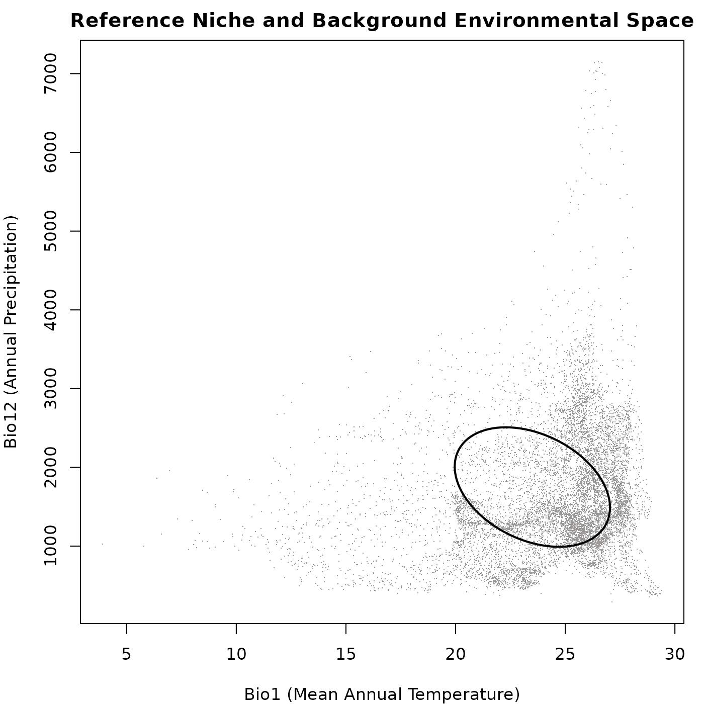
Simulating random communities
The random_ellipses() function helps to create a
community of species with niches that are randomly distributed in the
environmental space. The size and shape of these niches are constrained
by the reference niche but they vary. Below we show an general example
of how to use this function.
# Simulating the community
rand_comm <- random_ellipses(object = ref_ellipse,
background = back_data[, vars],
n = 20) # number of species in the community
# check the a few details from the generated community
names(rand_comm) # elements in the community object
#> [1] "details" "reference" "ellipse_community"
print(rand_comm) # a summary of the elements in the community object
#> nicheR Community Object
#> -----------------------
#> Generation Metadata:
#> Pattern: random
#> Number of ellipses: 20
#> Smallest prop.: 0.1
#> Largest prop.: 1
#> Thin background: FALSE
#> Resolution: 50
#> Random seed: 1
#>
#> Reference ellipsoid summary:
#> Dimensions: 2D
#> Variables: bio_1, bio_12
#> Centroid (mu): 23.5, 1750
#> Ellipsoid volume: 7927.882
#>
#> Community summary (n = 20 ):
#> Centroid positions | mean (+/-SD):
#> bio_1: 23.979 (+/-3.693)
#> bio_12: 1812.35 (+/-984.717)
#>
#> Ellipsoid volumes:
#> Mean: 3986.409
#> SD: 1340.256Now let’s plot the generated community to visualize the distribution
of the random ellipses in environmental space. We will use the
plot_community() function for this purpose.
# Plotting the community
par(mar = mars) # adjust margins for better visualization
plot_community(rand_comm, background = back_data[, vars],
pch = ".", col_bg = "#9a9797",
xlab = "Bio1 (Mean Annual Temperature)",
ylab = "Bio12 (Annual Precipitation)",
main = "Community of Random Ellipses")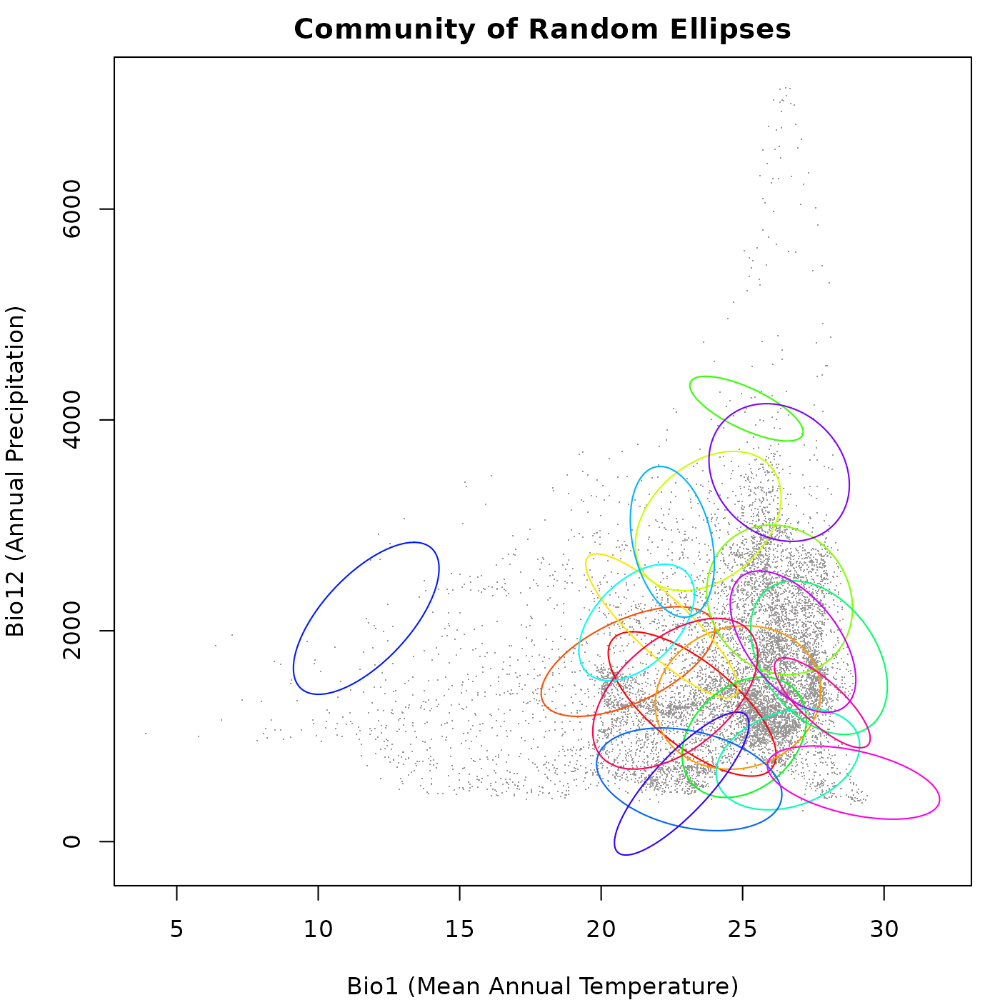
Effect of background density
As the random_ellipses() function uses the background as
a reference to pick ellipse centroids, the density of the background
data can affect the distribution of these ellipses. If the background
data is dense in certain areas of the environmental space, it may lead
to a higher concentration of ellipses in those areas, while sparse
background data may result in fewer ellipses being generated in those
regions. This can influence the overall structure and diversity of the
simulated community, as well as the patterns observed in niche overlap
and species interactions.
The example below shows how the density of the background can affect the distribution of random ellipses in the environmental space. We will simulate two communities: (1) using the full background as reference, and (2) using the arguments thin_background and resolution to reduce the effect of uneven point density. We will increase the number of species in the community to better visualize the effect of background density on the distribution of ellipses.
# Simulating the community with the full background
rand_comm_full <- random_ellipses(object = ref_ellipse,
background = back_data[, vars], n = 25)
# Simulating the community with a thinned background
rand_comm_thin <- random_ellipses(object = ref_ellipse,
background = back_data[, vars], n = 25,
thin_background = TRUE, resolution = 20)Let’s check the distribution of ellipses in the two communities with
a plot to visualize the effect of the arguments
thin_background and resolution.
# Plotting the communities
par(mfrow = c(1, 2), cex = 0.6, mar = mars) # set up the plotting area
## Plotting the community with the full background
plot_community(rand_comm_full, background = back_data[, vars],
pch = ".", col_bg = "#9a9797",
xlab = "Bio1 (Mean Annual Temperature)",
ylab = "Bio12 (Annual Precipitation)",
main = "Random Community from Full Background")
## Plotting the community with the thinned background
plot_community(rand_comm_thin, background = back_data[, vars],
pch = ".", col_bg = "#9a9797",
xlab = "Bio1 (Mean Annual Temperature)",
ylab = "Bio12 (Annual Precipitation)",
main = "Random Community from Thinned Background")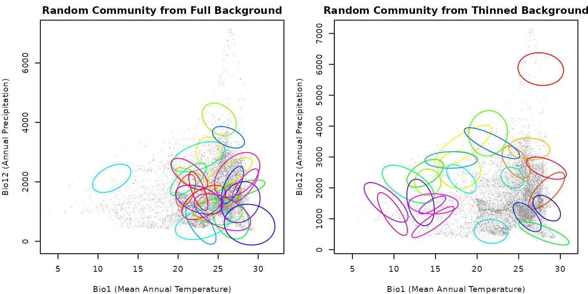
As you can see in the plots, the community generated with the full
background has a higher concentration of ellipses in areas where the
background data is denser, whereas the community created with thinned
background has a more even distribution of ellipses. This highlights the
importance of considering this factor when simulating communities using
random ellipses. Play with the value for the argument
resolution to see how it can affect the distribution of
ellipses in the community. Keep in mind that the largest the value for
this argument, the more points will be available for the function to
pick centroids.
Effect of proportion arguments
The size of the ellipses in the communities is determined by the
reference niche and the arguments smallest_proportion and
largest_proportion in the random_ellipses()
function. Based on the reference niche, playing with the values for the
areguments smallest_proportion and
largest_proportion can help explore scenarios with . This
can affect elements of the community structure such as the level of
niche overlap observed among the species (ellipses).
The example below shows how these proportions can affect the coverage
and overlap of random ellipses in environmental space. Considering that
smallest_proportion must be smaller than
largest_proportion, we will simulate four communities: (1)
both arguments are small; and (2) both arguments are large; (3)
smallest_proportion is large and
largest_proportion is small; and (4)
smallest_proportion is small and
largest_proportion is large. We will thin the background in
both cases to reduce the effect of uneven point density and better
visualize the effect of the proportion arguments.
# Community with both arguments small
rand_comm1 <- random_ellipses(object = ref_ellipse,
background = back_data[, vars], n = 25,
thin_background = TRUE, resolution = 20,
smallest_proportion = 0.1,
largest_proportion = 0.5)
# Community with both arguments large
rand_comm2 <- random_ellipses(object = ref_ellipse,
background = back_data[, vars], n = 25,
thin_background = TRUE, resolution = 20,
smallest_proportion = 0.7,
largest_proportion = 1.5)
# Community with smallest_proportion large and largest_proportion small
rand_comm3 <- random_ellipses(object = ref_ellipse,
background = back_data[, vars], n = 25,
thin_background = TRUE, resolution = 20,
smallest_proportion = 0.5,
largest_proportion = 0.7)
# Community with smallest_proportion small and largest_proportion large
rand_comm4 <- random_ellipses(object = ref_ellipse,
background = back_data[, vars], n = 25,
thin_background = TRUE, resolution = 20,
smallest_proportion = 0.1,
largest_proportion = 1.5)Let’s check the distribution of ellipses in the two communities with a plot to visualize the effect of the proportion arguments.
# Plotting the communities
par(mfrow = c(2, 2), cex = 0.6, mar = mars) # set up the plotting area
## Community with small proportions
plot_community(rand_comm1, background = back_data[, vars],
pch = ".", col_bg = "#9a9797",
xlab = "Bio1 (Mean Annual Temperature)",
ylab = "Bio12 (Annual Precipitation)",
main = "Random Community with Small Proportions")
## Community with large proportions
plot_community(rand_comm2, background = back_data[, vars],
pch = ".", col_bg = "#9a9797",
xlab = "Bio1 (Mean Annual Temperature)",
ylab = "Bio12 (Annual Precipitation)",
main = "Random Community with Large Proportions")
## Community with large smallest_proportion and small largest_proportion
plot_community(rand_comm3, background = back_data[, vars],
pch = ".", col_bg = "#9a9797",
xlab = "Bio1 (Mean Annual Temperature)",
ylab = "Bio12 (Annual Precipitation)",
main = "Random Community with Large and Small")
## Community with small smallest_proportion and large largest_proportion
plot_community(rand_comm4, background = back_data[, vars],
pch = ".", col_bg = "#9a9797",
xlab = "Bio1 (Mean Annual Temperature)",
ylab = "Bio12 (Annual Precipitation)",
main = "Random Community with Small and Large")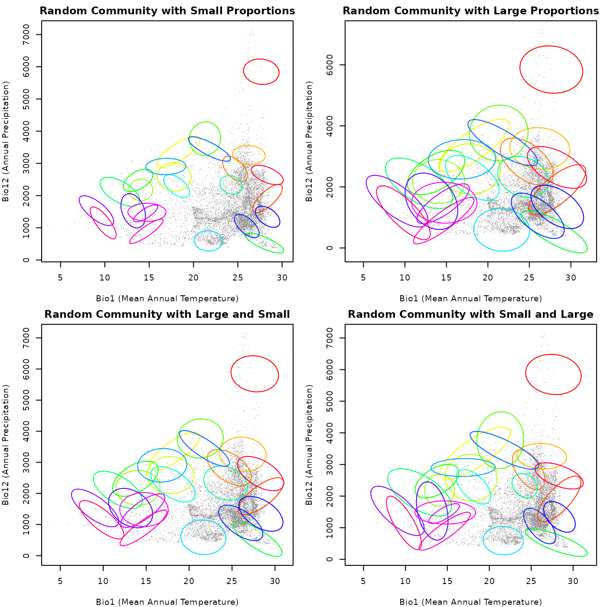
As shown in the plots, when both arguments are small, the ellipses
are generally smaller and there is less overlap among them. When both
arguments are large, the ellipses tend to be larger and there is more
overlap among them. When smallest_proportion is large and
largest_proportion is small, the ellipses tend to be of
intermediate size. Finally, when smallest_proportion is
small and largest_proportion is large, the ellipses tend to
be more variable in size. This highlights how the size of the ellipses
can affect the structure of the community and the “interactions” among
species niches (ellipses). Play with the values for these arguments to
explore different scenarios and pick the ones that are more convinient
for your research.
Simulating nested communities
The nested_ellipses() function helps to create a
community of species with niches that are nested in the environmental
space. The size and shape of these niches are constrained by the
reference niche but they vary. Below we show an general example of how
to use this function.
# Simulating the community
nest_comm <- nested_ellipses(object = ref_ellipse, n = 20)
# check the a few details from the generated community
print(nest_comm) # a summary of the elements in the community object
#> nicheR Community Object
#> -----------------------
#> Generation Metadata:
#> Pattern: nested
#> Number of ellipses: 20
#> Smallest prop.: 0.1
#> Bias exponent: 1
#>
#> Reference ellipsoid summary:
#> Dimensions: 2D
#> Variables: bio_1, bio_12
#> Centroid (mu): 23.5, 1750
#> Ellipsoid volume: 7927.882
#>
#> Community summary (n = 20 ):
#> Centroid positions | mean (+/-SD):
#> bio_1: 23.5 (+/-0)
#> bio_12: 1750 (+/-0)
#>
#> Ellipsoid volumes:
#> Mean: 2989.646
#> SD: 2502.944Now let’s plot the generated community to visualize the distribution
of the nested ellipses in environmental space. We will use the
plot_community() function for this purpose.
# Plotting the community
par(mfrow = c(1, 2), cex = 0.6, mar = mars) # set up the plotting area
## Plotting the community of nested ellipses
plot_community(nest_comm,
xlab = "Bio1 (Mean Annual Temperature)",
ylab = "Bio12 (Annual Precipitation)",
main = "Community of Nested Ellipses")
## Plotting the community of nested ellipses with the background
plot_community(nest_comm, background = back_data[, vars],
pch = ".", col_bg = "#9a9797",
xlab = "Bio1 (Mean Annual Temperature)",
ylab = "Bio12 (Annual Precipitation)",
main = "Nested Community with Background")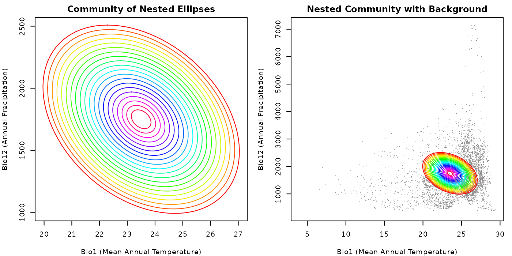
Despite the fact that background was not used to create nested ellipses, since the reference niche is located in the same environmental space, we can see how the generated ellipses are distributed in that space. The nested structure of the community is evident in both plots, with each ellipse being contained within the previous one.
Effect of proportion argument
An important arument in the nested_ellipses() function
is smallest_proportion, which determines the size of the
smallest nested ellipse to be generated, in relation to the reference
niche. A smaller value for smallest_proportion will result
in a greater range of ellipse sizes.
# Simulating the community with a small smallest_proportion
nest_comm_small <- nested_ellipses(object = ref_ellipse, n = 20,
smallest_proportion = 0.1)
# Simulating the community with a large smallest_proportion
nest_comm_large <- nested_ellipses(object = ref_ellipse, n = 20,
smallest_proportion = 0.6)
# Lets check the volume stats for the communities for comparison
## Communities with small smallest_proportion
mean(sapply(nest_comm_small$ellipse_community, function(x) x$volume))
#> [1] 2989.646
## Communities with large smallest_proportion
mean(sapply(nest_comm_large$ellipse_community, function(x) x$volume))
#> [1] 5190.676Below we plot the two communities to visualize the effect of the
argument smallest_proportion on the distribution of nested
ellipses in environmental space.
# Plotting the communities
par(mfrow = c(1, 2), cex = 0.6, mar = mars) # set up the plotting area
## Plotting the community with a small smallest_proportion
plot_community(nest_comm_small,
xlab = "Bio1 (Mean Annual Temperature)",
ylab = "Bio12 (Annual Precipitation)",
main = "Nested with Small Proportion")
## Plotting the community with a large smallest_proportion
plot_community(nest_comm_large,
xlab = "Bio1 (Mean Annual Temperature)",
ylab = "Bio12 (Annual Precipitation)",
main = "Nested with Large Proportion")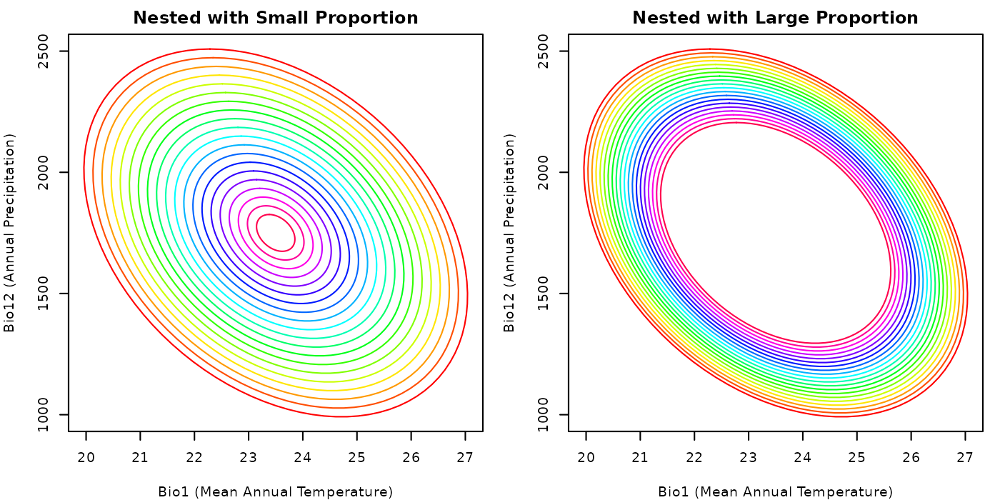
From the plot, it is clear why the mean volume of the ellipses in the
community with a small smallest_proportion is smaller than
the mean volume of the ellipses in the community with a large
smallest_proportion.
Effect of bias argument
Another important arument in the nested_ellipses()
function is bias, which determines the degree of bias
towards generating smaller or larger ellipses in the community. A value
of bias clusters ellipses toward the border of the
reference ellipse, whereas a value greater than 1 clusters them toward
the centroid of the reference ellipse. We will keep the value for
smallest_proportion the same in both cases to better
visualize the effect of the argument bias.
# Simulating the community with a bias towards the border
nest_comm_small_bias <- nested_ellipses(object = ref_ellipse, n = 20,
smallest_proportion = 0.1, bias = 0.2)
# Simulating the community with a bias towards the centroid
nest_comm_large_bias <- nested_ellipses(object = ref_ellipse, n = 20,
smallest_proportion = 0.1, bias = 2)
# Lets check the volume stats for the communities for comparison
## Community with bias towards the border
mean(sapply(nest_comm_small_bias$ellipse_community, function(x) x$volume))
#> [1] 5725.061
## Community with bias towards the centroid
mean(sapply(nest_comm_large_bias$ellipse_community, function(x) x$volume))
#> [1] 1953.741Now, let’s plot the two communities to visualize the effect of the
argument bias on the distribution of nested ellipses in
environmental space.
# Plotting the communities
par(mfrow = c(1, 2), cex = 0.6, mar = mars) # set up the plotting area
## Plotting the community with a bias towards the border
plot_community(nest_comm_small_bias,
xlab = "Bio1 (Mean Annual Temperature)",
ylab = "Bio12 (Annual Precipitation)",
main = "Nested with Bias Towards Border")
## Plotting the community with a bias towards the centroid
plot_community(nest_comm_large_bias,
xlab = "Bio1 (Mean Annual Temperature)",
ylab = "Bio12 (Annual Precipitation)",
main = "Nested with Bias Towards Centroid")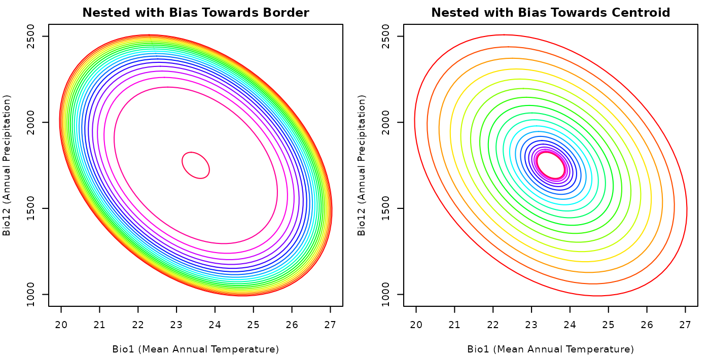
The plots clearly show the effect of the argument bias
on the distribution of nested ellipses. A community created with
bias values close to zero will tend to have larger volumes
than one created with values larger than one. We used these values only
for reference, play with the argument to explore different scenarios and
pick the one that helps you explore your questions.
Niche conservatism in communities
The function conserved_ellipses creates a ellipses based
on a reference ellipse aiming for a set of results that are similar to
the reference. To do that centroids for the new ellipses are sampled
from a background with a bias towards the centroid of the reference
ellipse. A general example of how to use this function is shown
below.
# Simulating the community
cons_comm <- conserved_ellipses(object = ref_ellipse,
background = back_data[, vars],
n = 20)
# check the a few details from the generated community
print(cons_comm) # a summary of the elements in the community object
#> nicheR Community Object
#> -----------------------
#> Generation Metadata:
#> Pattern: conserved
#> Number of ellipses: 20
#> Smallest prop.: 0.1
#> Largest prop.: 1
#> Thin background: FALSE
#> Resolution: 100
#> Random seed: 1
#>
#> Reference ellipsoid summary:
#> Dimensions: 2D
#> Variables: bio_1, bio_12
#> Centroid (mu): 23.5, 1750
#> Ellipsoid volume: 7927.882
#>
#> Community summary (n = 20 ):
#> Centroid positions | mean (+/-SD):
#> bio_1: 23.691 (+/-0.952)
#> bio_12: 1577.7 (+/-197.577)
#>
#> Ellipsoid volumes:
#> Mean: 3756.766
#> SD: 1539.154The plot below shows the generated community.
# Plotting the community withe the background
par(mar = mars) # adjust margins for better visualization
plot_community(cons_comm, background = back_data[, vars],
pch = ".", col_bg = "#9a9797",
xlab = "Bio1 (Mean Annual Temperature)",
ylab = "Bio12 (Annual Precipitation)",
main = "Community of Conserved Ellipses")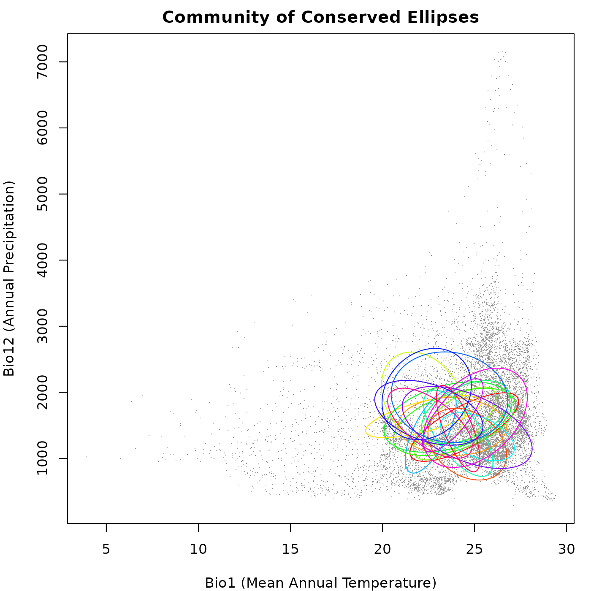
As you can see in the plot, the ellipses generated vary in size, direction, and position, but they don’t go very far from the original ellipdsoid. This follows the ideas of niche conservatism, which say that closely related species tend to have similar ecological niches.
Effect of background density
Similar to the random_ellipses() function, the
conserved_ellipses() function uses the background as a
reference to pick ellipse centroids. Differences in background density
can affect the bias used to generate the ellipses (bias = tend to select
new centroids close to the reference centroid). If the effect of
background density is not controlled, it will be like saying that niche
position evolution depends on the how close you are to the ancester
niche position and how common are environments. Keeping in mind that
ancestry is not considered here, the trick is that those common
environments are not necessarily geographically available as geography
is not considered here.
The example below shows how the density of the background can affect
the distribution of random ellipses when using the function. We will
simulate two communities: (1) using the full background as reference,
and (2) using the arguments thin_background and
resolution to reduce the effect of uneven point
density.
# Simulating the community with the full background
cons_comm_full <- conserved_ellipses(object = ref_ellipse,
background = back_data[, vars], n = 20)
# Simulating the community with a thinned background
cons_comm_thin <- conserved_ellipses(object = ref_ellipse,
background = back_data[, vars], n = 20,
thin_background = TRUE, resolution = 10)Let’s check the distribution of ellipses in the two communities with
a plot to visualize the effect of the arguments
thin_background and resolution.
# Plotting the communities
par(mfrow = c(1, 2), cex = 0.6, mar = mars) # set up the plotting area
## Plotting the community with the full background
plot_community(cons_comm_full, background = back_data[, vars],
pch = ".", col_bg = "#9a9797",
xlab = "Bio1 (Mean Annual Temperature)",
ylab = "Bio12 (Annual Precipitation)",
main = "Conserved Community from Full Background")
## Plotting the community with the thinned background
plot_community(cons_comm_thin, background = back_data[, vars],
pch = ".", col_bg = "#9a9797",
xlab = "Bio1 (Mean Annual Temperature)",
ylab = "Bio12 (Annual Precipitation)",
main = "Conserved Community from Thinned Background")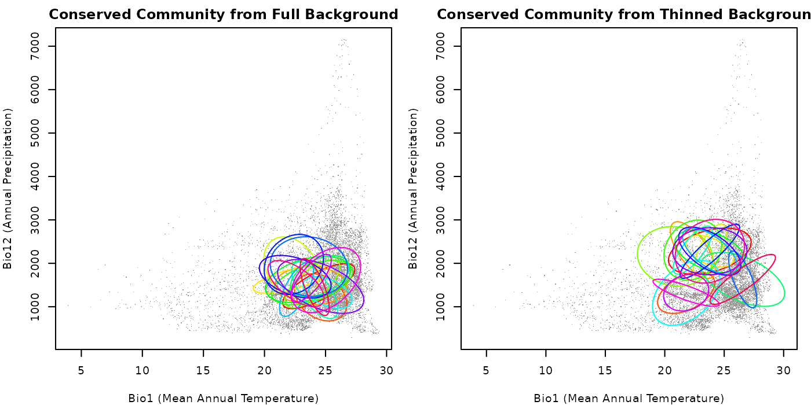
As you can see in the plots, the community generated with the full
background has a higher concentration of ellipses in areas where the
background data is denser compared to the one created with thinned
background. This highlights the importance of considering this factor
when simulating communities using the function
conserved_ellipses(). Play with the value for the argument
resolution to see how it can affect the distribution of
ellipses in the community (larger values, more points available).
Effect of proportion arguments
We have explored before the effect of the arguments that control the
smallest and largest proportions when generating new ellipses
considering the reference. We will explore two examples with the
function conserved_ellipses(): (1) both argeuments are
small; and (2) smallest_proportion is small and
largest_proportion is large. We will thin the background in
both examples to better visualize the effect of the porportion
arguments.
# Community with both arguments small
cons_comm1 <- conserved_ellipses(object = ref_ellipse,
background = back_data[, vars], n = 20,
thin_background = TRUE, resolution = 10,
smallest_proportion = 0.1,
largest_proportion = 0.5)
# Community with smallest_proportion small and largest_proportion large
cons_comm2 <- conserved_ellipses(object = ref_ellipse,
background = back_data[, vars], n = 20,
thin_background = TRUE, resolution = 10,
smallest_proportion = 0.1,
largest_proportion = 1.5)Let’s check the distribution of ellipses in the two communities with a plot to visualize the effect of the porportion arguments.
# Plotting the communities
par(mfrow = c(1, 2), cex = 0.6, mar = mars) # set up the plotting area
## Community with small proportions
plot_community(cons_comm1, background = back_data[, vars],
pch = ".", col_bg = "#9a9797",
xlab = "Bio1 (Mean Annual Temperature)",
ylab = "Bio12 (Annual Precipitation)",
main = "Conserved Community with Small Proportions")
## Community with small smallest_proportion and large largest_proportion
plot_community(cons_comm2, background = back_data[, vars],
pch = ".", col_bg = "#9a9797",
xlab = "Bio1 (Mean Annual Temperature)",
ylab = "Bio12 (Annual Precipitation)",
main = "Conserved Community with Small and Large")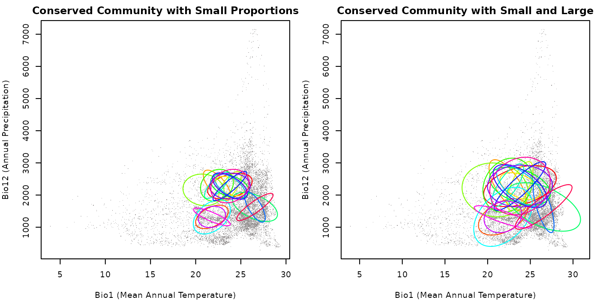
The plot show that when both arguments are small, the ellipses are
generally smaller. When smallest_proportion is small and
largest_proportion is large, the ellipses are more variable
in size, but larger than in the previous case because of the values we
used. A larger number of ellipses generated can help visualize the
effect of the arguments on the sizes of the ellipses a little better.
Play with the values for these arguments to explore different scenarios
and pick the ones that are more convinient for your research.
Predictions for communities
Once we have our communities simmulated using the functions explored
above, we can predict over new data to observe the patterns of
Mahalanobis distance and suitability derived from the ellipses. The
function predict() can be used with
nicheR_community objects to obtain predictions. The
difference between predict for community objects and that for
nicheR_ellipsoid objects is that only one type of
prediction can be obtained at a time. The options for the
prediction argument for nicheR_community
objects are:
-
Mahalanobis: Mahalanobis distance from the centroid of ellipses to every point innewdata. -
suitability: mutivariate normal probability for every point innewdata, derived from the Mahalanobis distance, interpreted as suitability. Values outside the ellipse are returned asNA. -
Mahalanobis_trunc: the same Mahalanobis distance but truncated to the limit of the ellipses. -
suitability_trunc: the same suitability but truncated to the limit of the ellipses. Values outside the ellipse are returned as zero.
Predictions can be produced for newdata in the form of
data.frame or SpatRaster objects. The
newdata can contain multiple variables, but the names of
the ones used to create the reference ellipse and the communities must
be included. As long as those two variable names match with the ones in
newdata, predictions are possible (i.e., predictions to
distinct areas in the world are possible). We will explore
implementations for both types of objects below.
Predict to data frames
The most intuitive way to work with ellipses is in environmental
space. This is because ecologicla niches are defined in this space.
Since envrionmental values can easily be organized in a data fame,
predictions for those objects are easy to obtain. See a quick example
below, using one of the communities generated in which we assumed niche
conservatism and background data as newdata.
# Predicting Mahalanobis distances
maha_cons_pred <- predict(cons_comm, newdata = back_data[, vars],
prediction = "Mahalanobis")
#> Starting: using newdata of class: data.frame...
#> Predictions for a conserved community of 20 ellipses...
#> | | | 0% | |==== | 5% | |======= | 10% | |========== | 15% | |============== | 20% | |================== | 25% | |===================== | 30% | |======================== | 35% | |============================ | 40% | |================================ | 45% | |=================================== | 50% | |====================================== | 55% | |========================================== | 60% | |============================================== | 65% | |================================================= | 70% | |==================================================== | 75% | |======================================================== | 80% | |============================================================ | 85% | |=============================================================== | 90% | |================================================================== | 95% | |======================================================================| 100%
#>
#> Finalizing results...
# Predicting suitability
suit_cons_pred <- predict(cons_comm, newdata = back_data[, vars],
prediction = "suitability")
#> Starting: using newdata of class: data.frame...
#>
#> Predictions for a conserved community of 20 ellipses...
#> | | | 0% | |==== | 5% | |======= | 10% | |========== | 15% | |============== | 20% | |================== | 25% | |===================== | 30% | |======================== | 35% | |============================ | 40% | |================================ | 45% | |=================================== | 50% | |====================================== | 55% | |========================================== | 60% | |============================================== | 65% | |================================================= | 70% | |==================================================== | 75% | |======================================================== | 80% | |============================================================ | 85% | |=============================================================== | 90% | |================================================================== | 95% | |======================================================================| 100%
#>
#> Finalizing results...
# Check Mahalanobis predictions
maha_cons_pred[1:5, 1:5]
#> bio_1 bio_12 ell_1 ell_2 ell_3
#> 1 18.16097 680 41.75216 120.2610 67.80944
#> 2 18.06556 703 43.25588 121.6585 67.18455
#> 3 17.95946 725 45.12359 123.5213 66.84268
#> 4 18.01018 734 44.46696 121.2863 65.50442
#> 5 18.14458 748 42.60751 116.1174 62.75064
# Check suiatbility predictions
suit_cons_pred[1:5, 1:5]
#> bio_1 bio_12 ell_1 ell_2 ell_3
#> 1 18.16097 680 8.582898e-10 7.685140e-27 1.885240e-15
#> 2 18.06556 703 4.046737e-10 3.821066e-27 2.576675e-15
#> 3 17.95946 725 1.590514e-10 1.505505e-27 3.057006e-15
#> 4 18.01018 734 2.208627e-10 4.602756e-27 5.968912e-15
#> 5 18.14458 748 5.596257e-10 6.101304e-26 2.365219e-14Now let’s check how the results look like in a plot. Predictions are
produced for all ellipses, and in the returned results, every prediction
is added as a new column to newdata. We will plot results
for only the first and second ellipses to show clearly the differences
between Mahalanobis and suitability predictions.
# Plotting the results
## Colors for mahalanobis distance
blue_pal <- hcl.colors(100, palette = "Oslo", rev = TRUE)
### Map columns with values for colors
col_maha <- lapply(3:4, function(x) { # 3 and 4 have values for ellipse 1 and 2
val_range <- range(maha_cons_pred[[x]], na.rm = TRUE)
color_indices <- findInterval(maha_cons_pred[[x]],
seq(val_range[1], val_range[2],
length.out = 100),
all.inside = TRUE)
blue_pal[color_indices]
})
## Colors for suitability
vir_pal <- hcl.colors(100, palette = "Viridis")
### Map columns with values for colors
col_suit <- lapply(3:4, function(x) { # 3 and 4 have values for ellipse 1 and 2
val_range <- range(suit_cons_pred[[x]], na.rm = TRUE)
color_indices <- findInterval(suit_cons_pred[[x]],
seq(val_range[1], val_range[2],
length.out = 100),
all.inside = TRUE)
vir_pal[color_indices]
})
## Plotting area parameters
par(mfrow = c(2, 2), cex = 0.6, mar = mars) # adjust margins for visualization
## plots
plot(maha_cons_pred[, vars], # plot the variables as points
col = col_maha[[1]], # color points according to Mahalanobis distance
pch = 16, xlab = "Bio1 (Mean Annual Temperature)",
ylab = "Bio12 (Annual Precipitation)",
main = "Mahalanobis Distance Ellipse 1")
add_ellipsoid(cons_comm[[3]][[1]], lwd = 2, col = "#e10000")
plot(maha_cons_pred[, vars], # plot the variables as points
col = col_maha[[2]], # color points according to Mahalanobis distance
pch = 16, xlab = "Bio1 (Mean Annual Temperature)",
ylab = "Bio12 (Annual Precipitation)",
main = "Mahalanobis Distance Ellipse 2")
add_ellipsoid(cons_comm[[3]][[2]], lwd = 2, col = "#e10000")
plot(suit_cons_pred[, vars], # plot the variables as points
col = col_suit[[1]], # color points according to Mahalanobis distance
pch = 16, xlab = "Bio1 (Mean Annual Temperature)",
ylab = "Bio12 (Annual Precipitation)",
main = "Suitability Ellipse 1")
add_ellipsoid(cons_comm[[3]][[1]], lwd = 2, col = "#e10000")
plot(suit_cons_pred[, vars], # plot the variables as points
col = col_suit[[2]], # color points according to Mahalanobis distance
pch = 16, xlab = "Bio1 (Mean Annual Temperature)",
ylab = "Bio12 (Annual Precipitation)",
main = "Suitability Ellipse 2")
add_ellipsoid(cons_comm[[3]][[2]], lwd = 2, col = "#e10000")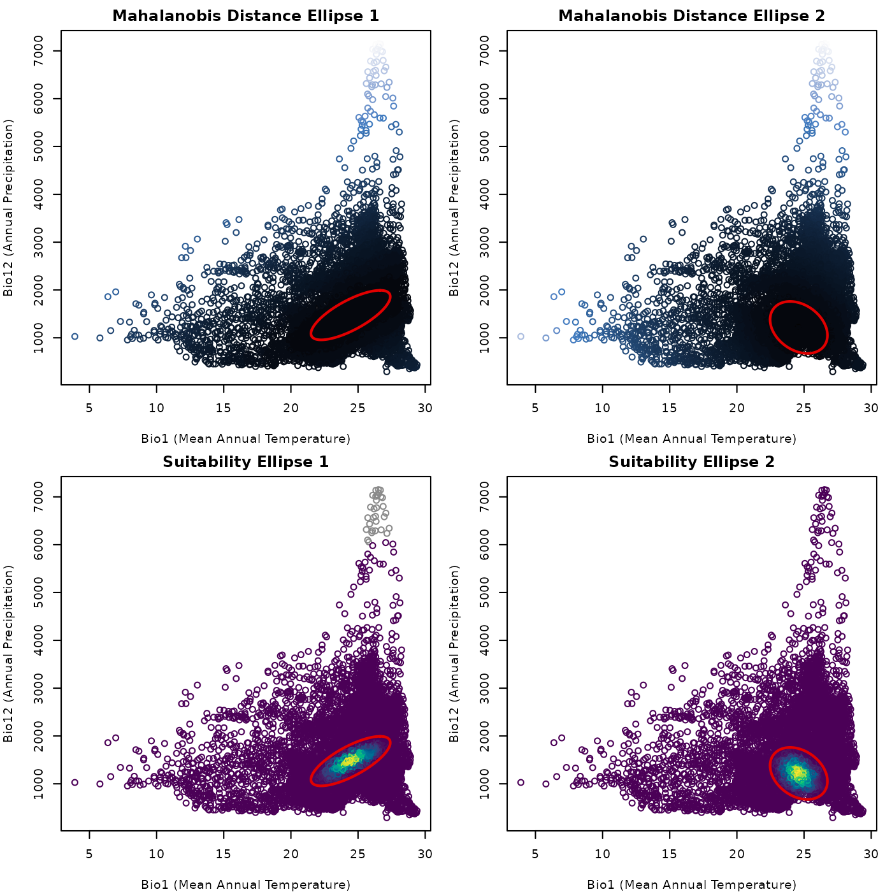
The plots shown are simple, but show clear patterns. For reference, dark colors mean low values for both, Mahalanobis distance and suitability. We can see that distance is larger the farther from the ellispse centroid, and suitability is higher closer to the centroid. That is the back bone of the theory behind using ellipses (or ellipsoids) as models of ecological niche.
Predict to SpatRaster
Now, let’s predict suing SpatRaster objects as
newdata. The important implication of this is that it
allows us to see goegraphic representations of our predictions. The
geographic patterns of our predictions are relevant for questions about
species geographic distributions. The code below shows how to produce
this predictions. We will use the smae community and the raster layers
from which our background derives (originally form WorldClim, inlcuded as data in the
nicheR package).
# Predicting Mahalanobis distances
maha_cons_predr <- predict(cons_comm, newdata = ma_bios,
prediction = "Mahalanobis")
#> Starting: using newdata of class: SpatRaster...
#> Predictions for a conserved community of 20 ellipses...
#> | | | 0% | |==== | 5% | |======= | 10% | |========== | 15% | |============== | 20% | |================== | 25% | |===================== | 30% | |======================== | 35% | |============================ | 40% | |================================ | 45% | |=================================== | 50% | |====================================== | 55% | |========================================== | 60% | |============================================== | 65% | |================================================= | 70% | |==================================================== | 75% | |======================================================== | 80% | |============================================================ | 85% | |=============================================================== | 90% | |================================================================== | 95% | |======================================================================| 100%
#>
#> Finalizing results...
# Predicting suitability
suit_cons_predr <- predict(cons_comm, newdata = ma_bios,
prediction = "suitability")
#> Starting: using newdata of class: SpatRaster...
#>
#> Predictions for a conserved community of 20 ellipses...
#> | | | 0% | |==== | 5% | |======= | 10% | |========== | 15% | |============== | 20% | |================== | 25% | |===================== | 30% | |======================== | 35% | |============================ | 40% | |================================ | 45% | |=================================== | 50% | |====================================== | 55% | |========================================== | 60% | |============================================== | 65% | |================================================= | 70% | |==================================================== | 75% | |======================================================== | 80% | |============================================================ | 85% | |=============================================================== | 90% | |================================================================== | 95% | |======================================================================| 100%
#>
#> Finalizing results...
# Check Mahalanobis predictions
maha_cons_predr
#> class : SpatRaster
#> size : 150, 240, 20 (nrow, ncol, nlyr)
#> resolution : 0.1666667, 0.1666667 (x, y)
#> extent : -100, -60, 5, 30 (xmin, xmax, ymin, ymax)
#> coord. ref. : lon/lat WGS 84 (EPSG:4326)
#> source(s) : memory
#> names : ell_1, ell_2, ell_3, ell_4, ell_5, ell_6, ...
#> min values : 0.000, 0.000, 0.000, 0.000, 0.0000, 0.000, ...
#> max values : 2254.287, 1277.837, 1564.944, 4586.265, 727.9395, 1636.542, ...
# Check suiatbility predictions
suit_cons_predr
#> class : SpatRaster
#> size : 150, 240, 20 (nrow, ncol, nlyr)
#> resolution : 0.1666667, 0.1666667 (x, y)
#> extent : -100, -60, 5, 30 (xmin, xmax, ymin, ymax)
#> coord. ref. : lon/lat WGS 84 (EPSG:4326)
#> source(s) : memory
#> names : ell_1, ell_2, ell_3, ell_4, ell_5, ell_6, ...
#> min values : 0, 3.320709e-278, 0, 0, 8.510317e-159, 0, ...
#> max values : 1, 1.000000e+00, 1, 1, 1.000000e+00, 1, ...Let’s check how the results look like in a plot.
# Plotting area parameters
par(mfrow = c(2, 2), cex = 0.6) # adjust margins for visualization
marsr <- c(0.5, 0.5, 2, 4)
# Plots
terra::plot(maha_cons_predr$ell_1,
axes = FALSE, box = TRUE, mar = marsr,
main = "Mahalanobis Distance Ellipse 1")
terra::plot(maha_cons_predr$ell_2,
axes = FALSE, box = TRUE, mar = marsr,
main = "Mahalanobis Distance Ellipse 2")
terra::plot(suit_cons_predr$ell_1,
axes = FALSE, box = TRUE, mar = marsr,
main = "Suitability Ellipse 1")
terra::plot(suit_cons_predr$ell_2,
axes = FALSE, box = TRUE, mar = marsr,
main = "Suitability Ellipse 2")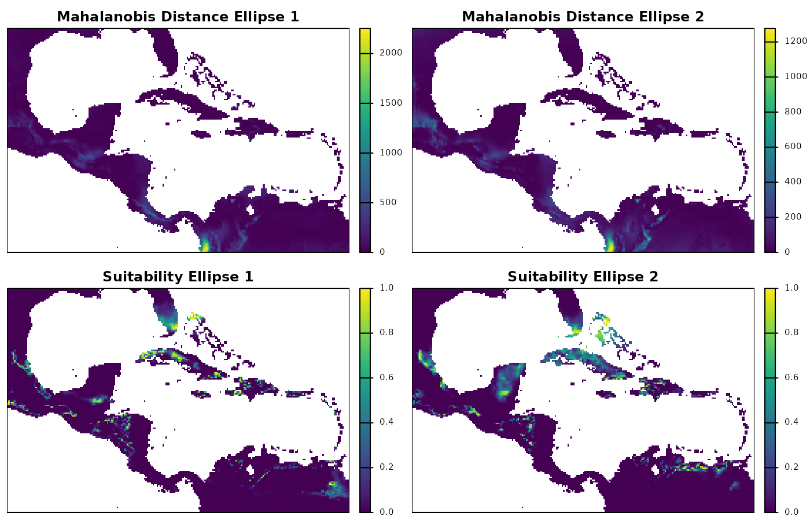
The raster plots show us the geographic patterns of Mahalanobis distances and suitability, which are much more complex than the ones in environmental space. Exploring this plots can help identify clusters of highly suitable areas, for instance. High suitability is expected to favor the presence of a species, which is why geographic projections of ecological niche models are used for explorations of potential distributional areas.
Truncating predictions
An important decision to make when stauding what conditions are good for a species to mantain populations for long periods of time is when environments stop being suitable. Here is where ellipsoids shyne as models of suitability, because their formulation gives us that threshold. The limit of the ellipses we created, are the theoretical limits for what is suitable and not suitable.
The options for prediction in our predict()
function include results for Mahalanobis and suitanility that can be
“truncated” using that ellipsoid limit. For Mahalanobis distances,
truncation implies that all conditions outside the ellipsoid limit
become NA. Whereas, for suitability, all values outside the limit become
zero. This is important when trying to translate ideas of niche into
potential distributions.
Let’s explore an example with suitability predictions, truncated based on the ellipse limits.
# Predicting suitability truncated using a data frame
suit_cons_predt <- predict(cons_comm, newdata = back_data[, vars],
prediction = "suitability_trunc")
#> Starting: using newdata of class: data.frame...
#> Predictions for a conserved community of 20 ellipses...
#> | | | 0% | |==== | 5% | |======= | 10% | |========== | 15% | |============== | 20% | |================== | 25% | |===================== | 30% | |======================== | 35% | |============================ | 40% | |================================ | 45% | |=================================== | 50% | |====================================== | 55% | |========================================== | 60% | |============================================== | 65% | |================================================= | 70% | |==================================================== | 75% | |======================================================== | 80% | |============================================================ | 85% | |=============================================================== | 90% | |================================================================== | 95% | |======================================================================| 100%
#>
#> Finalizing results...
# Predicting suitability truncated using raster data
suit_cons_predrt <- predict(cons_comm, newdata = ma_bios,
prediction = "suitability_trunc")
#> Starting: using newdata of class: SpatRaster...
#>
#> Predictions for a conserved community of 20 ellipses...
#> | | | 0% | |==== | 5% | |======= | 10% | |========== | 15% | |============== | 20% | |================== | 25% | |===================== | 30% | |======================== | 35% | |============================ | 40% | |================================ | 45% | |=================================== | 50% | |====================================== | 55% | |========================================== | 60% | |============================================== | 65% | |================================================= | 70% | |==================================================== | 75% | |======================================================== | 80% | |============================================================ | 85% | |=============================================================== | 90% | |================================================================== | 95% | |======================================================================| 100%
#>
#> Finalizing results...
# Check predictions in data.frame
suit_cons_predt[1:5, 1:5]
#> bio_1 bio_12 ell_1 ell_2 ell_3
#> 1 18.16097 680 0 0 0
#> 2 18.06556 703 0 0 0
#> 3 17.95946 725 0 0 0
#> 4 18.01018 734 0 0 0
#> 5 18.14458 748 0 0 0
# Check predictions in raster
suit_cons_predrt
#> class : SpatRaster
#> size : 150, 240, 20 (nrow, ncol, nlyr)
#> resolution : 0.1666667, 0.1666667 (x, y)
#> extent : -100, -60, 5, 30 (xmin, xmax, ymin, ymax)
#> coord. ref. : lon/lat WGS 84 (EPSG:4326)
#> source(s) : memory
#> names : ell_1, ell_2, ell_3, ell_4, ell_5, ell_6, ...
#> min values : 0, 0, 0, 0, 0, 0, ...
#> max values : 1, 1, 1, 1, 1, 1, ...Compared to our previous predictions of suitability, now the truncated results include zero.
Let’s explore the results using plots. First, the truncated results as they are produced.
# Colors for suitability
## Map ellipse 1 column with values for colors
val_range <- range(suit_cons_predt$ell_1, na.rm = TRUE)
color_indices <- findInterval(
suit_cons_predt$ell_1,
seq(val_range[1], val_range[2], length.out = 100),
all.inside = TRUE
)
col_suitt <- vir_pal[color_indices]
# Plotting area parameters
par(mfrow = c(1, 2), cex = 0.6, mar = mars)
## the binary for the background
plot(suit_cons_predt[, vars], # plot the variables as points
col = col_suitt, # color points according to Mahalanobis distance
pch = 16, xlab = "Bio1 (Mean Annual Temperature)",
ylab = "Bio12 (Annual Precipitation)",
main = "Suitability Trunc. E Space")
## the binary raster
terra::plot(suit_cons_predrt$ell_1,
axes = FALSE, box = TRUE, mar = marsr,
main = "Suitability Trunc. G Space")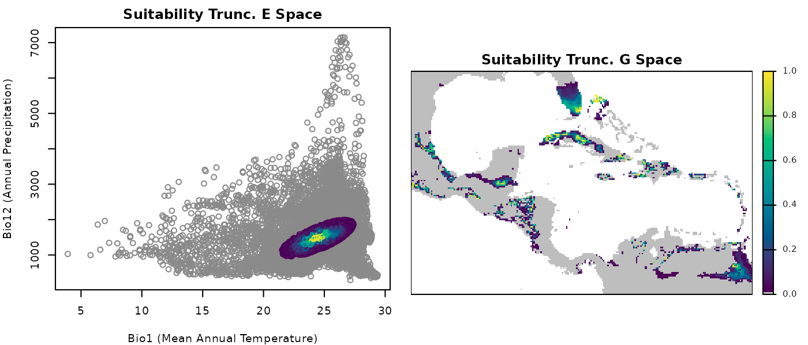
These plots of truncated suitability look very similar to the
simple suitability ones. But this is just an artefact from color
assigning in plotting.
Now, let’s plot suitable vs usuitable environments and areas. We start by transforming everything inside the ellipse into one and what is outside remains as zero.
# Obtaining values of zero and one
## results in data.frame
bin_suit_cons_predt <- suit_cons_predt
bin_suit_cons_predt[, -(1:2)] <- (bin_suit_cons_predt[, -(1:2)] > 0) * 1
## results in raster
bin_suit_cons_predrt <- suit_cons_predrt
bin_suit_cons_predrt <- (bin_suit_cons_predrt > 0) * 1
# Plotting
## Colors for suitability
bincol <- c("#c9c9c9", "#0004d5")
## Plotting area parameters
par(mfrow = c(1, 2), cex = 0.6, mar = mars)
## the binary for the background
plot(bin_suit_cons_predt[, vars], # plot the variables as points
col = bincol[as.factor(bin_suit_cons_predt$ell_1)],
pch = 16, xlab = "Bio1 (Mean Annual Temperature)",
ylab = "Bio12 (Annual Precipitation)",
main = "Suitability Binary E Space")
## the binary raster
terra::plot(bin_suit_cons_predrt$ell_1, col = bincol,
axes = FALSE, box = TRUE, mar = marsr,
main = "Suitability Binary G Space")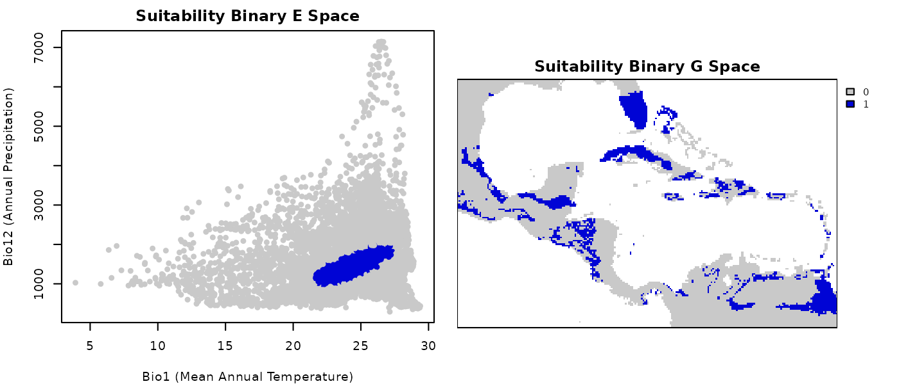
Now it is a lot more evident what was considered inside the ellipsoid in environmental and geographic space.
Simple community outcomes
He have shown examples for a couple of the ellipses generated, but this can be done for all the ones in the comunity. Once all the elements in the comunity are considered, interesting community level metrics and indices can be explored. Using the binary results obtained from the truncated predictions we will derive further results.
First, we already have a Presence-absence matrix (PAM) with our binary results as a data.frame. These type of matrices are commonly used in ecology because they tell us which species (columns) are where (rows: each rown is a site).
Let’s visualize our PAM below:
# Exclude sites with no species to make the plot easier
pam <- bin_suit_cons_predt[, -(1:2)]
pam <- as.matrix(pam[!rowSums(pam) == 0, ])
# Plot PAM using image
par(mar = c(1, 1, 5, 1), cex = 0.6)
image(1:ncol(pam), 1:nrow(pam), t(pam[nrow(pam):1, ]),
col = bincol, axes = FALSE)
box()
text(x = 1:ncol(pam), y = nrow(pam) * 1.01,
labels = colnames(pam),
srt = 90, adj = 0, xpd = TRUE)
title(main = "Species Presence-Absence Matrix", line = 3.5)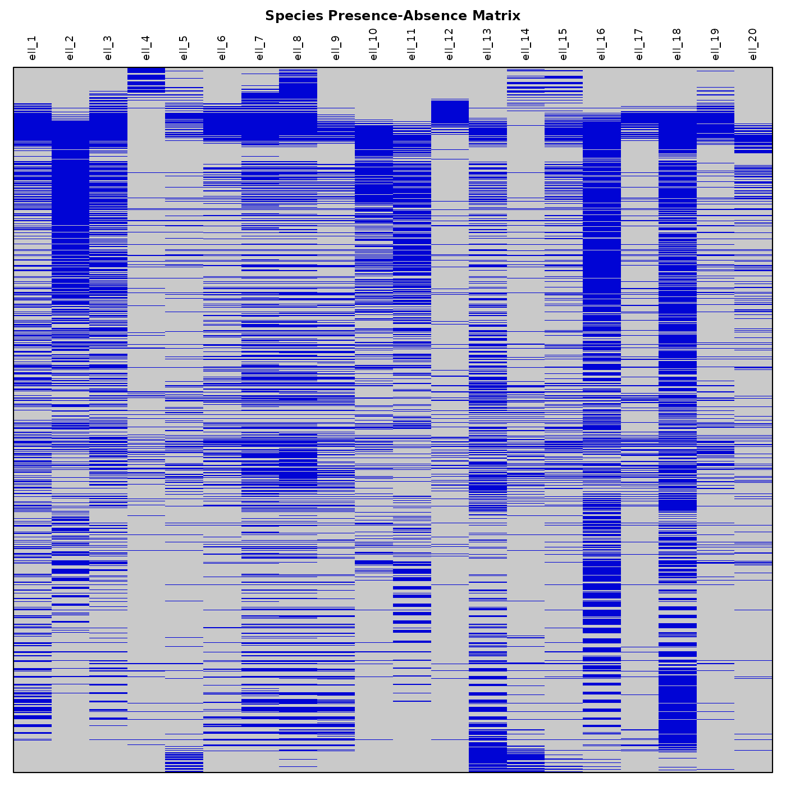
Now let’s plot a simple Species Richness Map. We need to compute richness using our binary truncated results.
# Compute richness
richness <- terra::app(bin_suit_cons_predrt, sum)
# Plot richness
terra::plot(richness, mar = marsr, col = rev(heat.colors(20)),
main = "Species Richness Map")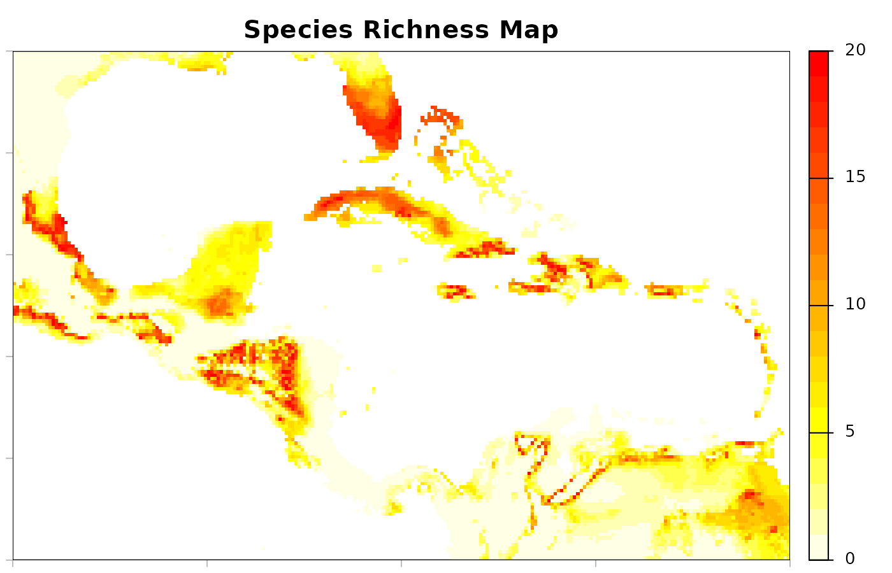
A lot of other results can be derived from the community predictions. We hope these demonstrations have helped inspire new ideas.
# Reset plotting parameters
par(original_par)Save and import
To facilitate writing nicheR objects to local directories and
importing results in later sessions, we created the
save_nicheR and read_nicheR functions. These
functions can be used with the results obtained from virtual community
simulations as nicheR_community objects, as shown
below.
# file name (in a temporary directory for demonstration purposes)
temp_file <- file.path(tempdir(), "conserved_community.rds")
# Save the community object to a local directory
save_nicheR(cons_comm, file = temp_file)
# Import the community object from a local directory
read_com <- read_nicheR(temp_file)Results from predictions obatined as data.frame or
SpatRaster can be saved using functions that are convinient
for those types of objects. For instance, write.csv() for
the data.frame and terra::writeRaster() for the raster
results. Importing those files can be done with read.csv()
and terra::rast().
# file names (in a temporary directory for demonstration purposes)
temp_df_file <- file.path(tempdir(), "df_cons_com_predictions.csv")
temp_raster <- file.path(tempdir(), "raster_cons_com_predictions.tif")
# Save predictions in data.frame objects
write.csv(suit_cons_predt, file = temp_df_file, row.names = FALSE)
# Save predictions in raster objects
terra::writeRaster(suit_cons_predt, filename = temp_raster)
# Import predictions as data.frame objects
read_com_pred_df <- read.csv(temp_df_file)
# Import predictions as SpatRaster objects
read_com_pred_ras <- terra::rast(temp_raster)